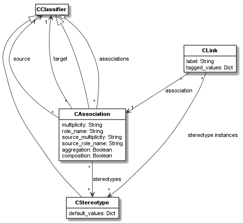

codeable_models.CAssociation¶
-
class
codeable_models.CAssociation(source, target, descriptor=None, **kwargs)¶ CAssociationis used for representing associations. Usually associations are created using theassociationmethod ofCClassifierwhich calls the constructor ofCAssociationto actually create the association (i.e.,CAssociationcould also be used directly).Superclasses:
CClassifier- Parameters
source (
CClassifier) – The source classifier of the association.target (
CClassifier) – The target classifier of the association.descriptor – An optional descriptor making it easier to define associations with a simple string. The descriptor syntax is described below.
**kwargs –
Pass in any kwargs acceptable to superclasses. In addition,
CAssociationaccepts:multiplicity,role_name,source_multiplicity,source_role_name,aggregation,composition,stereotypes.multiplicity:Used to provide the target multiplicity of the association. Defaults to
*. See documentation of the propertymultiplicityfor the accepted syntax.
role_name:Takes a string specifying the target role name and stores it in the same-named attribute. Defaults to
None.
source_multiplicity:Used to provide the source multiplicity of the association. Defaults to
1. See documentation of the propertymultiplicityfor the accepted syntax.
source_role_name:Takes a string specifying the source role name and stores it in the same-named attribute. Defaults to
None.
aggregation:Takes a boolean argument. If set to
True, this association is set to be an aggregation, else it is not. Also, if set toTrue, it sets the propertycompositiontoFalse.
composition:Takes a boolean argument. If set to
True, this association is set to be a composition, else it is not. Also, if set toTrue, it sets the propertyaggregationtoFalse.
stereotypes:Takes a single or a list of
CStereotypeobjects which extend this association. Extension is only possible, if this association is an association between meta-classes.
-
role_name¶ A string specifying the target role name.
-
source_role_name¶ A string specifying the source role name.
Please note that the
nameproperty derived fromCNamedElementis interpreted as the label of the association.Descriptor Syntax:
The
descriptorhas the following syntax:?<label>:? \ ?[<source_role_name>]? <source_multiplicity> ->|<>-|<*>- \ ?[<target_role_name>]? <target_multiplicity>With it, first the label of the association can be optionally specified. Source and target multiplicity strings, in the same form as accepted by the
multiplicityproperty, must be specified, too. They are divided by an arrow determining the type of association:->for ordinary associations,<>-for aggregations, and<*>-for compositions. Optionally in square brackets the source and target role names can be specified right before the multiplicities.Please note that first the keyword arguments are evaluated and then the descriptor. So the descriptor would override settings made in the keyword arguments.
Examples:
The following specifies a
0..1to*association from a classcartto a classitemlabelledin cartwith source role namecartand target role nameitem in cart:cart.association(item, "in cart: [cart] 0..1 -> [item in cart] *")
The same can be specified more verbosely with kwargs:
cart.association(item, name="in cart", role_name="item in cart", multiplicity="*", source_role_name="cart", source_multiplicity="0..1")
Main Relations:
The main relations of
CAssociationare shown in the figure below.A
CAssociationis need in order to deriveCLinkobjects, which link objects in an object model. TheCAssociationis the classifier of theCLink.As can be seen, a
CAssociationcan be extended by stereotypes. ACLinkcan have stereotype instances of anyCStereotypedefined on the link’s association.The
CClassifiercan be introspected for itsassociations. The association stores itssourceandtargetclassifiers.-
property
aggregation¶ Takes a boolean argument. If set to
True, this association is set to be an aggregation, else it is not. Also, if set toTrue, it sets the propertycompositiontoFalse.- Type
bool
-
property
attributes¶ Overridden method from
CClassifier. Attributes on associations are not supported.
-
property
composition¶ Takes a boolean argument. If set to
True, this association is set to be a composition, else it is not. Also, if set toTrue, it sets the propertyaggregationtoFalse.- Type
bool
-
delete()¶ Deletes this association. Removes the association from all classifiers, links, and derived associations. Removes it from all stereotypes, too. Removes it from associations it is derived from. Calls
delete()on superclass.- Returns
None.
-
delete_tagged_value(name, stereotype=None)¶ Delete tagged value of a stereotype attribute with the given
name. Optionally the stereotype to consider can be specified. This is needed, if one or more attributes of the same name are defined on the inheritance hierarchy. Then a shadowed attribute can be accessed by specifying its stereotype.- Parameters
name – The name of the attribute.
stereotype – The optional stereotype on which the attribute is defined.
- Returns
Value of the attribute.
- Return type
Supported Attribute Types
-
property
derived_associations¶ Getter for the list of associations this association is derived from.
- Type
list[CAssociation]
-
property
derived_from¶ Getter to get and setter to set a metaclass association this class-level association is derived from.
Please note that parameter has to be a metaclass association, and this association needs to be a class-level association. An association can be derived from a metaclass association, if the association is of the same type as the metaclass association, i.e., both are either
association,composition, oraggregation.Both for source and target multiplicities,the lower multiplicity must be equal or higher than the metaclass association’s lower multiplicity, and the upper multiplicity must be equal or lower than the metaclass association’s upper multiplicity.
For the upper multiplicities (source and target), we need to consider other derived associations of the same kind (i.e., same classes or their superclasses are used, derived from the same metaclass association), as well. For example, an consider a meta-class association:
a = m1.association(m2, "a: [m1] * -> [m2] 1")
If we would derive two associations from it:
c1.association(c2, "a1: [c1] * -> [c2] 1", derived_from=a) c1.association(c2, "a1: [c1] * -> [c2] 1", derived_from=a)
without adding up the multiplicities of all those associations, an upper (target) multiplicity of 2 could be reached, violating the meta-class target upper multiplicity of 1.
The stereotype instances must be stereotypes extending an association that this association is derived from.
The setter takes a CAssociation as argument. Can be
None(the default value) to remove thederived_fromrelation. The getter always returns a CAssociation orNone.- Type
-
get_opposite_classifier(classifier)¶ Given a classifier, this method returns the opposite in the association, i.e. the source if
classifieris the target, and vice versa. Raises an exception ifclassifieris neither source nor target.- Parameters
classifier – The classifier from which we want to get the opposite in the association.
- Returns
The opposite classifier.
- Return type
-
get_tagged_value(name, stereotype=None)¶ Get the tagged value of a stereotype attribute with the given
name. Optionally the stereotype to consider can be specified. This is needed, if one or more attributes of the same name are defined on the inheritance hierarchy. Then a shadowed attribute can be accessed by specifying its stereotype.- Parameters
name – The name of the attribute.
stereotype – The optional stereotype on which the attribute is defined.
- Returns
Value of the attribute.
- Return type
Supported Attribute Types
-
property
multiplicity¶ Getter and setter for the target multiplicity of the association. The multiplicity string has the following syntax:
<lower_multiplicity>..<higher_multiplicity>|<single_multiplicity>.The multiplicity is either specified as a range or using a
<single_multiplicity>. Accepted<single_multiplicity>values are any positive number, zero, or*.*denotes unbounded multiplicity.For multiplicity ranges,
<lower_multiplicity>is zero or any positive number specifying the lower end of the accepted multiplicity range.<higher_multiplicity>is a number specifying the higher end of the accepted multiplicity range. It must be higher than<lower_multiplicity>. It can also be*meaning unbounded higher multiplicity.*multiplicity is equal to the range0..*.- Type
str
-
set_tagged_value(name, value, stereotype=None)¶ Set the tagged value of a stereotype attribute with the given
nametovalue. Optionally the stereotype to consider can be specified. This is needed, if one or more attributes of the same name are defined on the inheritance hierarchy. Then a shadowed attribute can be accessed by specifying its stereotype.- Parameters
name – The name of the attribute.
value – The new value.
stereotype – The optional stereotype on which the attribute is defined.
- Returns
None
-
property
source_multiplicity¶ Getter and setter for the source multiplicity of the association. Syntax is equal to the syntax defined in the documentation of the
multiplicityproperty.- Type
str
-
property
stereotype_instances¶ Getter to get and setter to set the stereotype instances of this association.
The stereotype instances must be stereotypes extending an association that this association is derived from.
The setter takes a list of stereotype instances or a single stereotype instance as argument. The getter always returns a list.
- Type
list[CStereotype]|CStereotype
-
property
stereotypes¶ The setter takes a single or a list of
CStereotypeobjects which extend this association. Extension is only possible, if this association is an association between meta-classes. The getter returns the stereotypes that extend this association.- Type
CStereotype|list[CStereotype]
-
property
tagged_values¶ Getter for getting all tagged values of the association using a dict, and setter of setting all tagged values of the association based on a dict. The dict uses key/value pairs. The value types must conform to the types defined for the attributes.
- Type
dict[str, value]